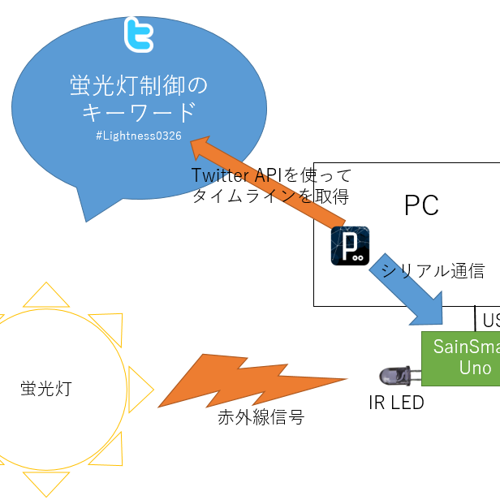

Ryotaro Tsuda
-
Ryotaro Tsuda wrote a new post, 就活から1年，思ったことがあったので書く, on the site 汗を流して飯が旨い 4年前
気づいたらもう６月になっていた
最近は蒸し暑い日が多く,正直自分には生きづらい時期だ.
丁度去年の今頃,自分は就活をしていた.
結構しんどかったことを覚えている.
それから１年弱,今度は新卒１年目として,町中で頑張っている就活生を見かけたり,
出身研究室の後輩を応援したり,母校に弊社の紹介をしたりする立場になった.今日,行きつけのバーで飲んでいたら,
研究室の後輩から,志望していた企業に内定が決まっ[…]
-
Ryotaro Tsuda wrote a new post, chocolateyはいいぞ, on the site 汗を流して飯が旨い 4年前
最近は専らpowershellを覚えてそれでバリバリ作業中。
そこで初めて使った環境構築ツール「chocolatey」が良かった。
アイキャッチ画像は全然関係ないけど,
Google Photoで「チョコレート」で検索したら出てきたフランスのスーパーで撮った一枚余談:powershellは開発言語らしい…
そもそも今までブラウザから探してinstallしていた人間だったので
packageで落として一括[…]
-
Ryotaro Tsuda wrote a new post, Twitterから自宅の蛍光灯を制御したときのお話, on the site 汗を流して飯が旨い 4年 2か月前
twitterから自宅の蛍光灯を制御してみました
やるに至った背景は，
部屋の模様替えをした際に，配置上壁にある蛍光灯のスイッチにアクセスできなくなってしまいました．蛍光灯はリモコン制御のLED照明なので，部屋中どこからでもリモコンで制御可能ですが，
その辺に転がって紛失しそうであったため，入口に常設することにしました．しかし，これだとベッドに寝ころびながら電気を消せない！！
ということで[…] 
-
Ryotaro Tsuda wrote a new post, 自宅にファイルサーバーを設置してネット機器から接続できるようにしよう！～それ系の知識がないひとのための超初級編～, on the site 汗を流して飯が旨い 4年 3か月前
こんにちは
大学での卒業研究が無事終了し，来年からの社会人生活のため実家に帰ってきました！
そんな折，自分のMacbookProのみだとデータの管理がそろそろ危うくなってきたので
母艦(メインPC)の調達
デスクトップPC環境の構築
NASを買うほどでもないので，自宅のHDDを使ってファイルサーバー化
データ類を置いて各端末から閲覧・編集可能なようにと，体制を変えたいなあと思って取り組ん[…]

-
Ryotaro Tsuda wrote a new post, [GGJTUT2016]ベターでベタなベタのゲームを作った(チームβ), on the site 汗を流して飯が旨い 4年 4か月前
GGJ@TUTに参加してきました
今年のテーマは「RITUAL」
【名詞】
1[集合的には 【不可算名詞】] (しばしば同じ形式で繰り返される)儀式，礼拝式，(儀式的)行事.
用例
Christian ritual(s) キリスト教の儀[…]
-
Ryotaro Tsuda wrote a new post, グラフとかで数値に差があるときに使う波線(省略線)を作る．, on the site 汗を流して飯が旨い 4年 4か月前
元気に卒論執筆中 津田です．
ものすごくしょうもないんですが，グラフの数値に差があるときの波線(省略線というらしいです)をグラフからとかではなく，画像として作って貼り付けたい場合ってありますよね？
私も卒論のパワポスライドを作っている際に，ロードマップを書いていて，年代に大きな差があったため画像で必要になりました．
まあすぐ解決するだろうと思ったら，思いのほか苦戦したので，いるかわかりませんがこれ以上被害者を増やさないた[…]
-
Ryotaro Tsuda wrote a new post, 2015年うまかったもんを振り返る, on the site 汗を流して飯が旨い 4年 5か月前
2015年に食べたうまかったもんを振り返ってみました．
2014年はこちら
審査基準2015年1/1-12/31で食べたもの
実際に口にしたもののみ
今写真を見てその味を思い出すことが出来るか
あとは独断と偏見大学にて 内定祝いに頂いたケーキ
札幌 根室エスカロップ
札幌 北海道で食べた魚
札幌 ジンギスカン
札幌 北海道ついた瞬間買ったカツゲン
吉祥寺 シャッターズ グラタンとトー[…]
-
Ryotaro Tsuda wrote a new post, GGJ初参加学生のためのFAQ, on the site 汗を流して飯が旨い 4年 5か月前
GGJの季節がやってまいりました！
2年前はドッキドキの初参加だった私ももう今年で3回目のGGJになります．
最近では後輩からよくGGJについての質問を受ける立場になりました．
そうした初参加で不安な学生のために今回は首都圏在住の初参加学生をペルソナとしたFAQをまとめたいと思います．
まずはGGJについて軽くおさらい
GGJは2009年から始まり今年で8年目になるイベントです．
日本国内における認知も広がり，過去[…]
-
Ryotaro Tsuda wrote a new post, 特段書くことはないんだけど，大掃除したくないからエントリ書く, on the site 汗を流して飯が旨い 4年 5か月前
こんばんは，もう3時ですね．
特筆して書くことはないんですが，あと3時間くらいしたら両親が来て私は実家に強制送還され正月を迎える予定です．
それに向けて今は下宿先を大掃除せねばなのですが，何気なくTVを回していたらスターウォーズが流れてきて見ていて一向に進まない現状です．って何かとスターウォーズの話題でつきっきりの2015年歳末ですが，私はスターウォーズを1作品も見たことがないのを思い出しました．今流れているこ[…]

-
Ryotaro Tsuda wrote a new post, 福島GameJamで開発した作品が重賞受賞, on the site 汗を流して飯が旨い 4年 5か月前
2015年8月に行われた「東北ITコンセプト・福島GameJam」で開発致しました，
「花火メーカー」(チーム：小川流花火大会)がマッチロック賞とOPTPiX SpriteStudio賞を頂きました．
公式ページ：PressRelease: 東北ITコンセプト 福島GameJam2015 協賛企業賞発表と東京ゲームショウ(9/19,20)出展のお知らせ
以下選評
-[…]
-
Ryotaro Tsuda wrote a new post, 学会で2件の研究発表を行います！, on the site 汗を流して飯が旨い 4年 9か月前
こんばんは 津田です．
制作活動に励む傍ら，実はせっせと研究室で研究活動と論文の執筆を行っていました．
学部4年生という身分では有りますが，所属している研究室でチャレンジできる環境を用意していただき，学会に2本論文を投稿する事が出来ました．
初めての研究，初めての論文執筆ということで最初は日本語の使い方を復習するところから始まりましたが，周りの方々の協力もあって無事書き終えることが出来ました．支えてくれた方々に感[…]
-
Ryotaro Tsuda wrote a new post, FGJ2015@TUTに参加してきた, on the site 汗を流して飯が旨い 4年 9か月前
8/22-23に東京工科大学で行われた福島ゲームジャム2015に今年も参加してきた。
5回目のゲームジャムだったが今回は色々と変則的なことが起き、
自分自身、いつもと違う体験ができたので忘れないうちにそれを報告しようと思う。1) 福島Game Jam VR Challege
今回私のチームは「福島Game Jam VR Challege」チームということで
ゲーム作品開発ではなく、VRシステムの開発がミッ […]
-
Ryotaro Tsuda wrote a new post, VSCode 0.7.0での変更点と新機能User SnippetsでUnityのスニペットを有効にする, on the site 汗を流して飯が旨い 4年 10か月前
こんばんは
最近VSCodeにお熱の津田です。先日のアップデートでVSCodeのバージョンが0.5.0→0.7.0となり、
かなり大きな仕様の変更がありました。今回のエントリでは
・0.7.0で痛VSCode化
・User Snippetsを利用したUnityのスニペットについて共有します。
0.7.0では内部のフォルダ構成に大きな変更があったようです。
今まで痛VSCode化して […]
-
Ryotaro Tsuda wrote a new post, Unity×VisualStudioCodeで煩わしい.metaファイルをエクスプローラーに表示させないようにする, on the site 汗を流して飯が旨い 4年 10か月前
こんばんは。
UnityでVisualStudioCodeを使っていたら
エクスプローラーにmetaファイルも出てきて煩わしかったので消してみました。TumblingDice 【VSCode】Visual Studio Code0.5.0の新機能まとめを参考にさせていただきました
調べてみると何やらsetting.jsonからいじることが出来そうな予感
command + shift + […]

-
Ryotaro Tsuda wrote a new post, 最近のUnity開発事情(Unity×VisualStudioCode×Git), on the site 汗を流して飯が旨い 4年 10か月前
ここ最近のUnity開発事情について
Visual Studio Code × Githubの組み合わせをよく使っていますUnity×VisualStudioCode連携はいい感じ
やり方について軽く解説UnityのPreferencesから使用するエディタをCodeに設定
Unityからスクリプトを作成，右クリック-Sync MonoDevelop […]

-
Ryotaro Tsuda wrote a new post, 2014年うまかったもんを振り返る, on the site 汗を流して飯が旨い 5年 5か月前
2014年うまかったものを振り返ってみました．
審査基準2014年1/1-12/31で食べたもの
実際に口にしたもののみ
今写真を見てその味を思い出すことが出来るか
あとは独断と偏見小田原 浜焼のお店にて ホタテといかとんび
小田原 かまぼこの里にて かまぼこテイスティングと地域のお茶
沼津 ギネスのかき揚げ
新百合ヶ丘 おいしいホテルのケーキセット大阪 たこ焼きミュージアム
道頓 […]